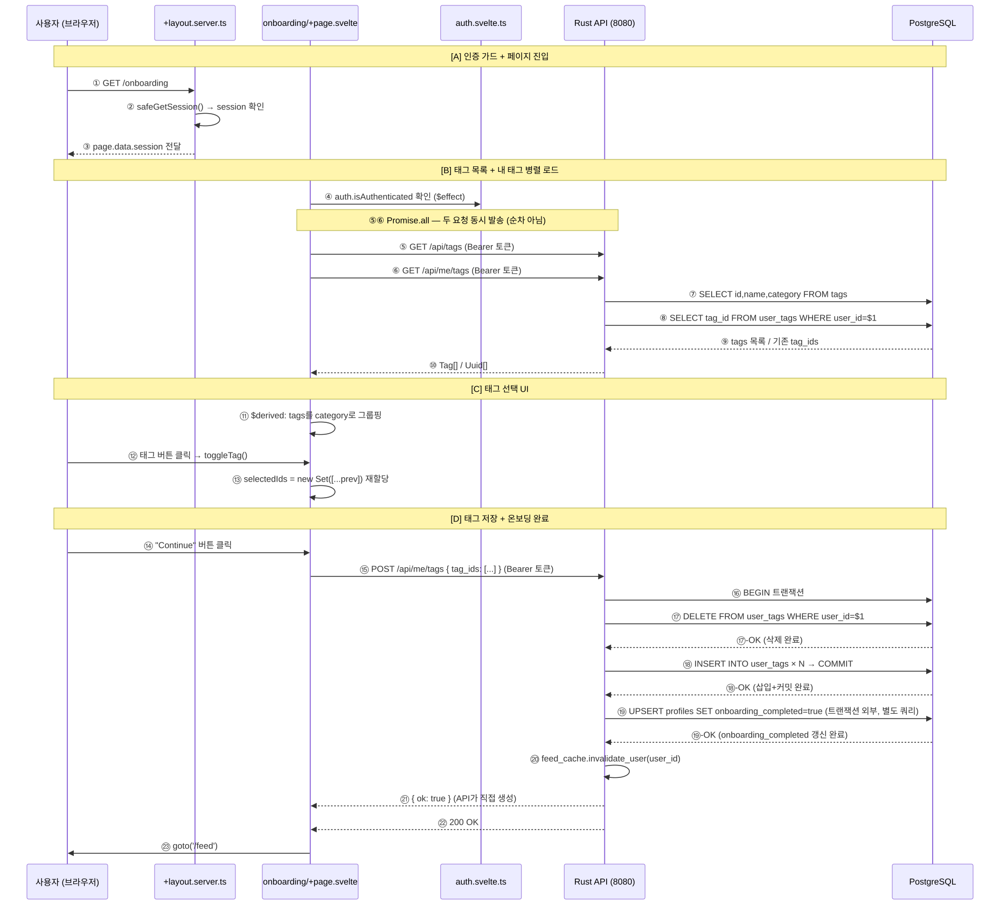

로그인 직후 신규 유저가 딱 한 번 거치는 태그 선택 흐름. ①~㉓까지.

등장인물
흐름도에 나오는 박스들
| 이름 | 역할 |
|---|---|
| 사용자 (브라우저) | 사용자가 보는 화면 |
| +layout.server.ts | 앱 전체에 공통으로 적용되는 서버 관문. 어느 페이지를 열든 먼저 실행됨 |
| onboarding/+page.svelte | 실제 온보딩 화면을 그리는 컴포넌트 |
| auth.svelte.ts | 로그인 상태를 앱 전체에서 공유하는 스토어 |
| Rust API (8080) | 태그 목록 조회, 태그 저장 같은 실제 기능을 처리하는 서버 |
| PostgreSQL | 태그 데이터, 유저-태그 관계를 저장하는 데이터베이스 |
[A] 인증 가드 + 페이지 진입
화살표 ①②③
① GET /onboarding — 브라우저가 서버에 페이지를 요청한다
사용자가 /onboarding 주소로 이동하면 브라우저가 서버에 "이 페이지 줘"라고 요청을 보내. 요청할 때 로그인 때 저장해둔 쿠키(토큰)를 자동으로 함께 담아서 보내.
② safeGetSession() — 서버가 "이 사람 로그인된 사람이야?" 확인한다
요청이 서버에 도착하면 +layout.server.ts가 제일 먼저 실행돼. 여기서 safeGetSession()이 실행돼. ①에서 같이 온 쿠키 안의 토큰을 꺼내서 "이 토큰 진짜야?" 검증하는 거야.
+layout.server.ts는 앱 전체 페이지에 공통으로 적용되는 서버 코드야. iOS로 치면 AppDelegate랑 비슷해. /onboarding을 열든 /feed를 열든 이 파일이 항상 먼저 실행돼. 이름에 server가 붙어있으면 브라우저가 아닌 서버에서 실행된다는 뜻이야.
safeGetSession()은 사실 두 단계로 동작해:
getSession() → 쿠키에서 JWT를 꺼내서 로컬에서 디코드 (네트워크 없음) getUser() → Supabase Auth 서버에 "이 토큰 진짜야?" 확인 (네트워크 있음)
두 단계를 거치는 게 "safe"한 이유야. getSession()만 하면 로컬 JWT를 믿는 건데, 누군가 토큰을 조작했더라도 잡아낼 수 없어. getUser()까지 해서 서버에 물어봐야 "진짜 유효한 사람인가"를 확신할 수 있어. 그 대신 매 요청마다 Supabase Auth 서버로 네트워크가 나가.
느리게 느껴질 수 있는데, 프로덕션에서는 앱 서버와 Supabase가 같은 리전에 있으면 10~50ms 수준이라 체감이 거의 안 돼.
safeGetSession은 JWT 로컬 검증에 그치지 않고 Supabase 서버에도 확인을 요청해 — 변조된 토큰까지 잡기 위해서야.
+layout.server.ts에 한 번만 써두면 모든 보호된 페이지가 자동으로 이 검증을 거쳐. 검증에 실패하면 /login으로 튕겨내. 이게 인증 가드야.
③ page.data.session 전달 — session 정보를 페이지로 넘겨준다
검증을 통과하면 session 정보를 page.data에 담아서 onboarding/+page.svelte로 넘겨줘. 이걸 받은 뒤에야 온보딩 화면이 브라우저에 그려지기 시작해.
[B] 태그 목록 + 내 태그 병렬 로드
화살표 ④~⑩
[A]에서 인증 가드를 통과하고 onboarding/+page.svelte가 화면에 마운트됐어.
viewDidLoad()가 호출되는 시점이랑 같아.④ auth.isAuthenticated 확인 ($effect) — 클라이언트 보조 가드
마운트 직후 $effect가 먼저 실행돼. auth.isAuthenticated가 false면 /login으로 보내는 보조 가드 역할이야. [A]의 서버 가드 + 클라이언트 가드의 이중 방어야. 페이지가 열려있는 상태에서 토큰이 만료되거나 다른 탭에서 로그아웃했을 때도 즉시 감지해 튕겨낼 수 있어.
$state 값이 바뀔 때마다 자동으로 다시 실행돼. iOS의 .onChange(of:) 모디파이어랑 비슷해.
⑤⑥ Promise.all — 두 요청 동시 발송
태그 선택 화면을 그리려면 두 가지 데이터가 필요해. 전체 태그 목록과 내 기존 태그. onMount 안에서 두 요청을 동시에 보내.
await fetchTags() → await fetchMyTagIds() 이렇게 쓰면 첫 번째가 끝나야 두 번째가 시작돼. 두 요청 시간이 더해지는 거야.Promise.all([A, B])는 두 요청을 동시에 보내고 둘 다 완료될 때까지 기다려. 각각 200ms씩 걸린다면, 순차는 400ms, Promise.all은 200ms야. 두 결과가 서로 의존하지 않을 때 쓰는 패턴이야.
신규 유저도 내 기존 태그를 가져오는 이유는, 이 온보딩 페이지가 설정 화면에서 태그를 수정할 때도 재사용되기 때문이야. 신규 유저면 그냥 빈 배열이 오고, 아무것도 체크 안 된 상태로 시작하는 거야.
⑦⑧ Rust API → DB 쿼리
Rust API는 두 요청을 받아서 각각 DB에 쿼리를 날려.
GET /api/tags → tags 테이블에서 전체 태그 목록 조회 GET /api/me/tags → user_tags 테이블에서 이 유저가 선택한 태그 조회
tags는 앱에 존재하는 태그 목록 자체야. user_tags는 유저가 어떤 태그를 선택했는지 연결 정보야. 이렇게 분리해두면 태그 이름이 바뀌어도 tags 테이블 한 곳만 수정하면 돼. 이 분리를 정규화라고 해.
⑨⑩ 결과 반환 → $state 갱신 → 화면 자동 재렌더링
두 요청이 완료되면 결과를 화면 상태에 넣어.
const [allTags, myTagIds] = await Promise.all([...]) tags = allTags selectedIds = new Set(myTagIds)
$state로 선언된 변수가 바뀌면 이 값을 참조하는 UI가 자동으로 다시 그려져. iOS의 @State나 @Published랑 같은 역할이야.selectedIds = new Set(myTagIds) 이렇게 새 Set을 만들어서 재할당하는 게 보여? selectedIds.add()처럼 기존 Set에 추가하면 Svelte가 변화를 감지 못해. Svelte 5의 $state는 참조(reference) 비교로 변경을 감지하거든. 새 객체를 만들어서 넣어야 "바뀌었다"고 인식해.
[C] 태그 선택 UI
화살표 ⑪⑫⑬
[B]에서 받아온 Tag[]와 Uuid[]를 tags와 selectedIds에 넣었어. 이제 그 데이터를 화면에 그리고, 사용자가 태그를 클릭할 때 어떻게 처리하는지야.
⑪ $derived — tags를 category로 그룹핑
태그 목록을 그냥 나열하지 않고 카테고리별로 묶어서 보여줘. "Technology", "Science" 이런 식으로 섹션이 나뉘는 거야. 이 그룹핑을 $derived로 처리해.
const grouped = $derived(
tags.reduce((acc, tag) => {
const cat = tag.category ?? 'Other';
if (!acc[cat]) acc[cat] = [];
acc[cat].push(tag);
return acc;
}, {})
)
$state 값을 기반으로 자동으로 계산되는 값이야. tags가 바뀌면 grouped도 자동으로 다시 계산돼. iOS의 계산 프로퍼티(var grouped: [String: [Tag]] { ... })랑 같은 개념이야. 직접 값을 넣는 게 아니라 "이 값에서 이렇게 계산해줘"라고 선언해두는 거야.
⑫⑬ 태그 버튼 클릭 → toggleTag() → selectedIds 재할당
⑫는 유저가 버튼을 눌러서 함수가 실행되는 거고, ⑬은 그 함수 안에서 selectedIds가 새 Set으로 교체되는 거야. 같은 toggleTag() 함수 안에서 일어나는 일을 흐름도가 두 단계로 나눠 표현한 것뿐이야.
function toggleTag(tagId: string) {
const next = new Set(selectedIds);
if (next.has(tagId)) {
next.delete(tagId);
} else {
next.add(tagId);
}
selectedIds = next; ← 새 Set 재할당 필수
}
기존 Set에 바로 추가/제거하지 않고 새 Set을 만들어서 재할당해. [B]에서 설명한 것처럼 Svelte 5의 $state는 참조 비교로 변경을 감지하거든. 새 객체를 넣어야 버튼 색상이 자동으로 반영돼.
[D] 태그 저장 + 온보딩 완료
화살표 ⑭~㉓
[C]에서 태그를 원하는 대로 골랐어. [D]는 그 선택을 실제로 저장하고 피드로 넘어가는 마무리 단계야.
⑭ "Continue" 버튼 클릭
사용자가 버튼을 누르면 화면이 들고 있던 selectedIds(선택된 태그 ID 목록)를 가지고 Rust API에 저장 요청을 보내.
⑮ POST /api/me/tags { tag_ids: [...] } (Bearer 토큰)
Rust API(8080)로 POST 요청을 보내. { tag_ids: ["uuid1", "uuid2", ...] } 형태로 선택된 태그 ID들을 담아서.
"원하는 데이터 + 내가 누구인지 증명" 이 두 가지를 항상 같이 보내야 해. 쿠키는 SvelteKit ↔ Supabase 사이에서만 자동으로 처리되고, Rust API는 별개의 서버라 쿠키를 받지 않거든. 그래서 인증이 필요한 Rust API 요청은 전부 Authorization: Bearer {토큰} 헤더를 직접 붙여야 해. [B]의 ⑤⑥도 같은 방식이었어.
function authHeaders() {
return { Authorization: `Bearer ${currentAccessToken}` };
}
Authorization: Bearer eyJhbGci... 이런 형태로, 로그인할 때 받은 JWT 토큰을 여기에 담는 거야. iOS에서 URLRequest에 .setValue("Bearer \(token)", forHTTPHeaderField: "Authorization") 수동으로 붙이는 거랑 완전히 같아.
⑯⑰⑱ 트랜잭션: BEGIN → DELETE → INSERT × N → COMMIT
Rust API가 태그를 저장할 때 트랜잭션으로 처리해.
BEGIN ← "지금부터 하는 것들은 아직 확정 전이야" DELETE FROM user_tags WHERE user_id=$1 ← ⑰-OK (삭제 완료) INSERT INTO user_tags (user_id, tag_id) × N ← ⑱-OK (삽입 완료) COMMIT ← "다 됐어, 이제 진짜 저장해"
BEGIN~COMMIT 사이의 변경사항들은 DB에 임시로만 기록된 상태야. COMMIT이 성공해야 비로소 확정돼. 중간에 오류가 나면 ROLLBACK이 일어나서 BEGIN 이전 상태로 돌아가.
왜 기존 태그를 다 지우고 새로 넣냐면, 어떤 태그가 추가됐고 어떤 게 빠졌는지 비교하는 코드가 필요 없어서야. 그냥 전부 교체하면 돼.
context.save() 실패 시 context.rollback() 하는 패턴이랑 같은 개념이야.
⑲ UPSERT profiles SET onboarding_completed=true (트랜잭션 외부)
태그 저장이 끝난 뒤, 별도 쿼리로 onboarding_completed를 true로 바꿔. DB에는 이런 SQL 명령어들이 있어.
| 명령어 | 역할 |
|---|---|
SELECT | 읽기 (변경 없음) |
INSERT | 새 행 추가 |
UPDATE | 기존 행 수정 |
DELETE | 행 삭제 |
UPSERT | 있으면 UPDATE, 없으면 INSERT |
여기서 UPSERT를 쓰는 이유는, 신규 유저는 profiles 행 자체가 없을 수 있기 때문이야. UPDATE만 쓰면 행이 없을 때 아무 일도 안 일어나. UPSERT는 없으면 새로 만들어줘서 어느 경우든 안전해.
UPDATE와 INSERT를 합친 말이야. "있으면 업데이트하고, 없으면 새로 넣어줘"라는 뜻이야. 신규 유저는 profiles 행이 아직 없을 수 있어. 그때 UPDATE만 쓰면 아무것도 안 바뀌거든. UPSERT를 쓰면 없으면 새로 만들고 있으면 값만 바꿔주니까 안전해.
이 쿼리가 트랜잭션 바깥에 있는 건 의도적이야. 태그 저장이 성공한 뒤 이 업데이트가 실패해도 큰 문제가 아니거든. 이렇게 이해할 수 있어 — 태그 저장은 "반드시 성공해야 하는 핵심 데이터", onboarding_completed 갱신은 "실패해도 재시도 가능한 메타데이터"라는 성격 차이 때문에 분리한 거 아닐까.
⑳ feed_cache.invalidate_user(user_id)
태그가 바뀌었으니 이 유저의 피드 캐시를 지워. 신규 유저는 캐시가 없으니까 실제로는 아무 일도 안 해. 그런데 굳이 체크 없이 그냥 호출하는 이유는, 이 온보딩 저장 로직이 설정 화면에서 태그를 수정할 때도 그대로 재사용되거든. 그때는 캐시가 실제로 있으니까 무효화가 의미 있어. 신규일 때 해가 없는 빈 호출을 감수하면서 재사용 구조를 유지하는 거야.
㉑ { ok: true } + ㉒ 200 OK
모든 처리가 성공하면 API가 { ok: true }를 응답으로 돌려보내. DB에서 뭔가 조회해서 반환하는 게 아니라 "다 됐어"라는 신호를 API가 직접 만들어서 보내는 거야. 200 OK는 HTTP 상태 코드야. 200은 성공, 401은 인증 실패, 404는 없음, 500은 서버 오류를 뜻해.
㉓ goto('/feed')
200 OK를 받으면 goto('/feed')로 피드 화면으로 이동해. 온보딩 끝.